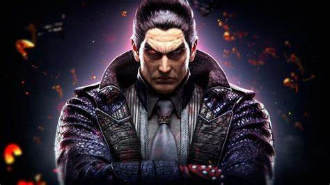

Kazuya Mishima
Personaje Diabolicp
Kazuya Mishima es un personaje ficticio Japonés de la saga de juegos de lucha Tekken. Hace su primera aparición en Tekken como protagonista, apareciendo en la mayor parte de juegos de la saga, exceptuando en Tekken 3.
Kazuya es el hijo del malévolo y despiadado jefe de la Mishima Zaibatsu, Heihachi Mishima. A raíz de sufrir un intento de asesinato a manos de su padre siendo niño, Kazuya despertó el denominado «Gen Diabólico», heredado de su madre Kazumi, quien fue la primera en la familia en poseerlo. Kazuya se ve poseído por este gen, despertando una personalidad cruel y despiadada.
A lo largo de la saga se ha proclamado campeón del Primer Torneo del Rey del Puño de Hierro, siendo el promotor del segundo, estando ausente en el tercero, finalista del cuarto y desconociéndose su participación en el quinto y el sexto, para acabar finalmente con su padre en el Séptimo Torneo y tomar el control y ser el promotor del Octavo Torneo.
